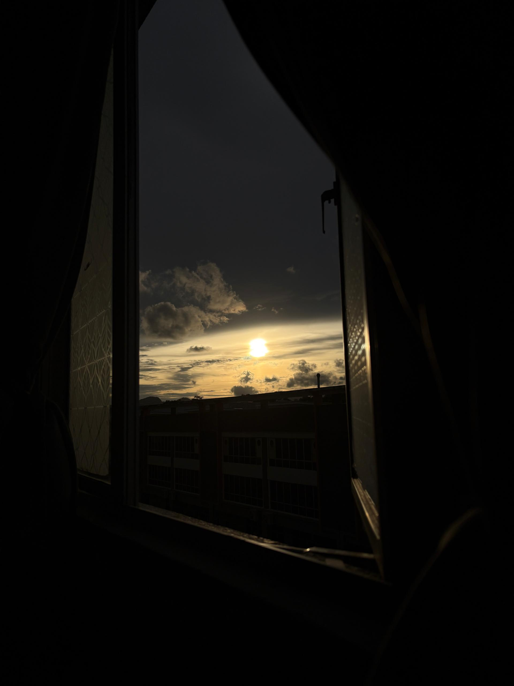
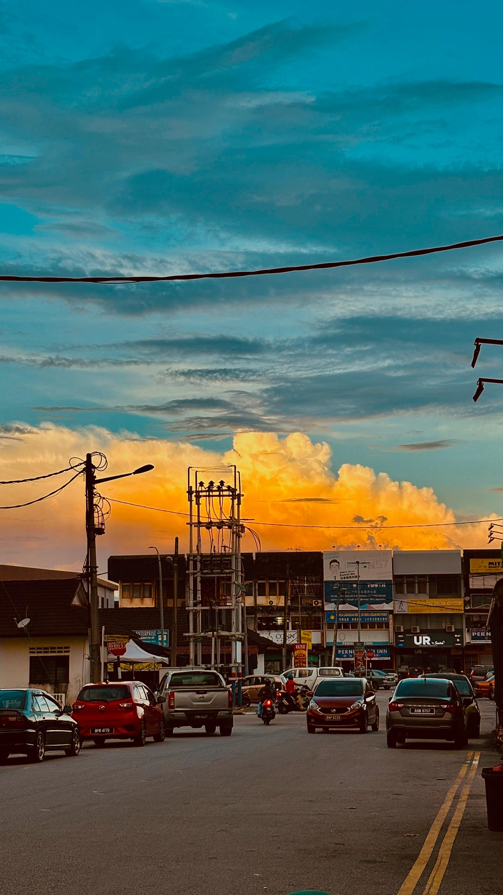
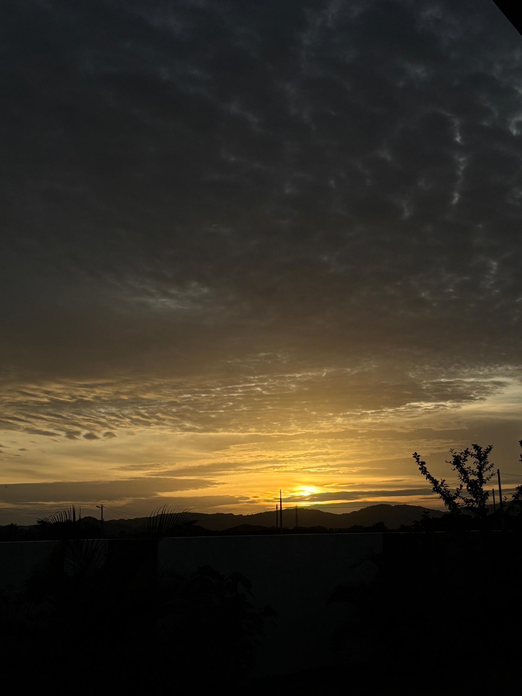

My Chosen Career: Professional Photographer
I want to be a professional photographer because I love how photos can capture feelings, stories, and special moments with my family and friends. To me, photography is not just about taking pictures—it is about showing people the world in a way that makes them stop and feel something.
Right now, I am still learning and haven’t taken any amazing photos yet, but i did take some scenery photos that i love it. To add on, I am excited to practice and get better. I want to take all kinds of photos—portraits, landscapes, real-life moments—and make people see beauty in everyday things.
This is not just a job for me; it is something I really care about. I hope one day my photos can tell stories and make people feel connected.
My Photography Gallery


